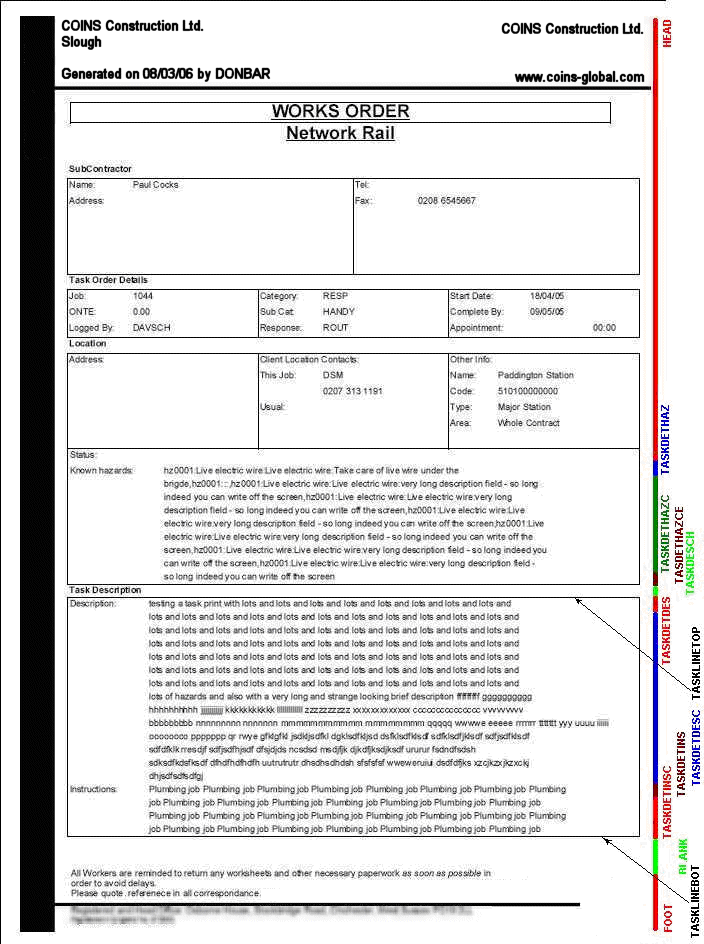
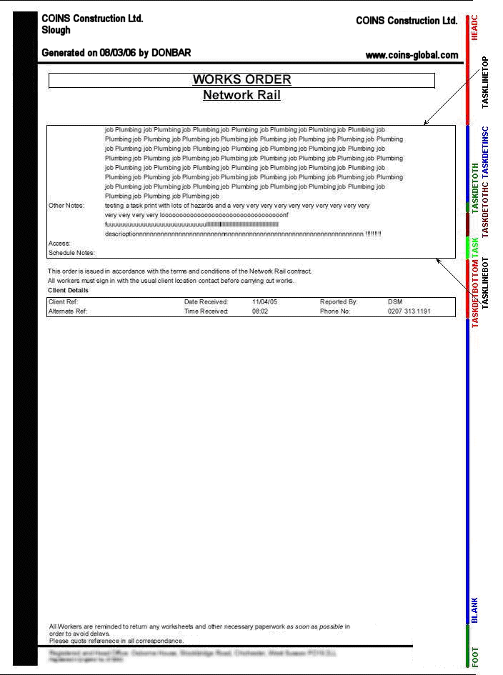

FM Task Print
allows you to configure the format of the task print to suit your needs.
You define the layout of statements using Document Designer. See Configurable Documents for general information on how to configure documents for printing.
You need to set up a configurable document for each different type of task print you want to print.
To define the layout for the FM Task Print:
- Use the document type Task Print (FM).
- You can configure a simple document that prints header and footer forms, and prints sw_sor records using a BODY form.
- You can also configure a more complex document that prints extended text for hazards, task description, task instructions, and task notes. To configure this:
- the Use Extended Body Print? field.
- Configure the fields to print using the following forms:
- TASKDETHAZ - to print the first line of Hazards (If there is only one line, TASKDETHAZE is used.)
- TASKDETHAZC - to print the subsequent Hazard lines (TASKDETHAZCE is used to print the last line.)
- TASKDESCH - Task description "header"
- TASKDETDES / TASKDETDESC - to print the task description (the first and subsequent lines)
- TASKDETINS / TASKDETINSC - to print the task instructions (the first and subsequent lines)
- TASKDETOTH / TASKDETOTHC - to print the task other notes (the first and subsequent lines)
These print before any sw_sor records in the BODY form.
- The document will then print a TASK form and a TASKDETBOTTOM form. The TASKDETBOTTOM form is for a fixed-length form. Specify the length (number of lines) using the Body Bottom Height field. If there are not enough lines at the bottom of the page to print this, it is printed on a new page.
The following images show sample prints, with the appropriate forms indicated at the right.

